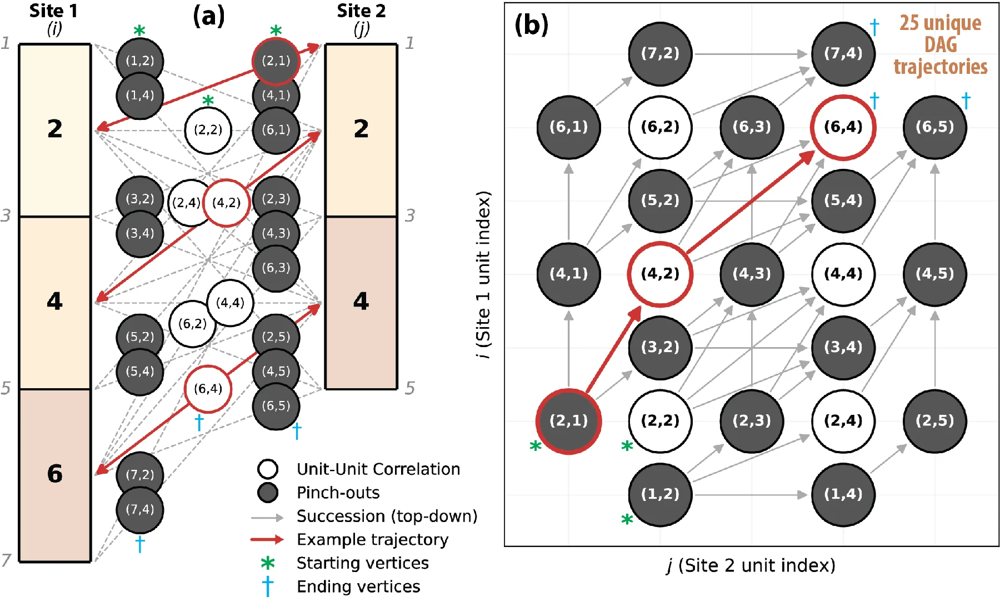
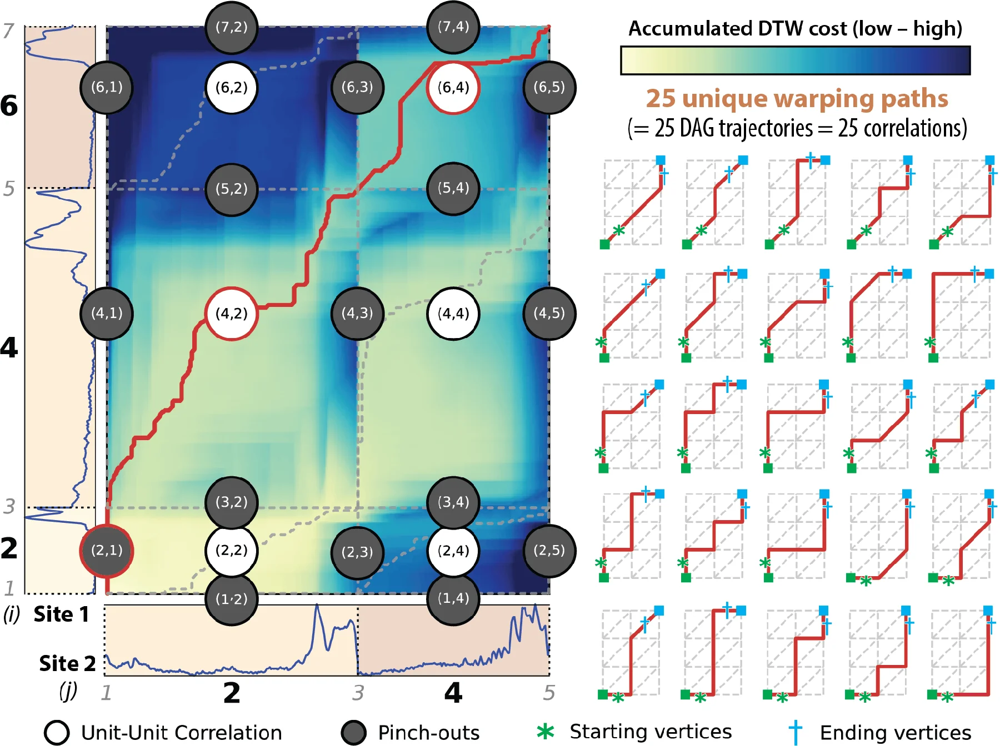
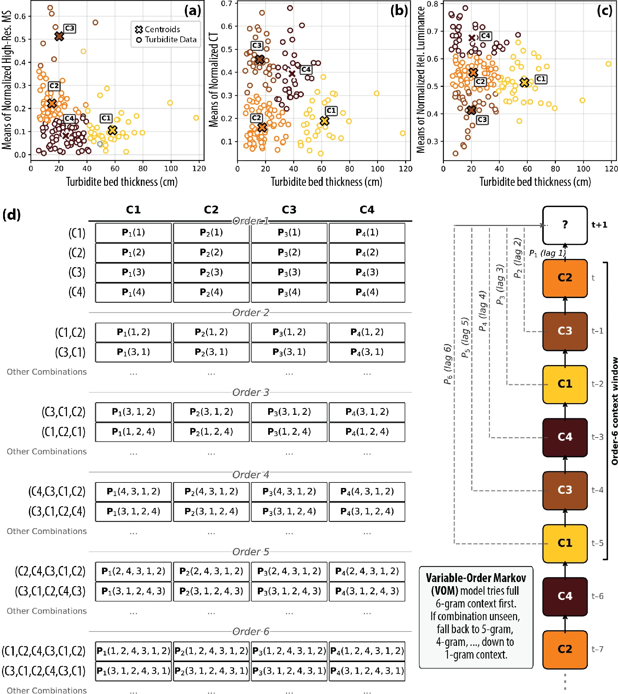

Python · Core and log correlation
pyCoreRelator
pyCoreRelator correlates sediment cores and physical logs bed by bed.
- Version1.0.3
- Python3.9 to 3.13
- LicenseAGPL-3.0
Overview
pyCoreRelator aligns the signals with dynamic time warping, and it keeps each match inside ordinary stratigraphic rules: superposition, age order, and pinch-outs. The package scores how alike two sections are, on the idea that a closer signal match is a stronger correlation, and those scores are how it chooses a preferred solution. It also prepares the inputs: cleaning and gap filling for logs, and stitching, clipping, and color or brightness profiles for core images.


Key features
Segment-based dynamic time warping
Cores are split on user-picked depth boundaries (machine-picked boundaries are planned), so pinch-outs and forced datums stay under the user’s control.
Interactive datum picking
With a live view, categories, and CSV export.
Age constraints
Limit which correlation solutions are allowed.
Quality scores
And a search for the preferred solution.
A null test
Synthetic cores, either by random draws or by a Markov chain trained on k-means clusters of the real units.
Image-to-log tools
For CT scans and RGB photos, including brightness or color profiles, alignment, and stitching.

Installation
The package runs on Python 3.9 through 3.13. Python 3.14 is not supported yet, because numba (required by librosa) does not support it. Install from PyPI or conda-forge:
pip install pycorerelatorconda install pycorerelatorCitation
If you use pyCoreRelator, cite the paper and the software:
Paper
Lai, L.S.-H., Sylvester, Z., Covault, J.A., Gomberg, J.S., Nieminski, N.M. (Accepted 2026) Reproducible event-bed correlation with uncertainty: pyCoreRelator. Sedimentology.
Software
Lai, L.S.-H. (2025) pyCoreRelator, Zenodo, https://doi.org/10.5281/zenodo.17847259.
How it works
Key features in full
- Segment-based dynamic time warping. Cores are split on user-picked depth boundaries (machine-picked boundaries are planned), so pinch-outs and forced datums stay under the user’s control.
- Interactive datum picking, with a live view, categories, and CSV export.
- Age constraints that limit which correlation solutions are allowed.
- Quality scores, and a search for the preferred solution.
- Warping paths that run the full length of both cores.
- A null test: synthetic cores, either by random draws or by a Markov chain trained on k-means clusters of the real units.
- Image-to-log tools for CT scans and RGB photos, including brightness or color profiles, alignment, and stitching.
- Gap filling with random forest, XGBoost, or LightGBM, with feature weights and trend constraints.
- Several log types at once (magnetic susceptibility, CT, RGB, density), warped together or separately.
- Plots of the cost matrix and paths, segment-wise ties, animations, and the spread of solutions.
Correlation quality metrics
Each candidate correlation gets a set of scores:
- Pearson’s r between the aligned sequences (a default score).
- Normalized DTW cost, reported as its complement, nDTWc (a default score).
- Warping ratio: DTW distance relative to Euclidean distance.
- Warping efficiency, from path length and alignment quality.
- Diagonality: 100% means the path sits on the diagonal of the cost matrix.
- Age overlap, when age constraints are in use.
Inter-unit correlations
Possible bed-to-bed ties are laid out as a directed acyclic graph. Real units sit on even indices. Odd indices are phantom units of zero thickness, the places a bed can pinch out. Paths through that graph are the successions that do not reverse time. Each path is then drawn as one composite warping path: horizontal or vertical steps are the pinch-outs, and a diagonal step ties two real units.
Age order throws out paths that contradict the dated markers. What remains is ranked by similarity (Pearson’s r and nDTWc) and can be set next to a human pick. The number of geometrically allowed correlations grows with the unit count. That count follows a Delannoy number. On Cascadia turbidite cores the counted solutions sit near that curve (Lai, 2026, figshare).
Statistical evaluation
Pearson’s r and nDTWc only rank solutions inside one setting. They do not say whether a match is better than the similarity you would get from unrelated beds of the same facies. The null test builds that background. Units from the study are pooled and grouped with k-means. The cluster count comes from the elbow method and the Kneedle algorithm. A variable-order Markov model, using up to six preceding units by default, sets the chance of the next cluster. Synthetic columns are stacked to a target thickness or unit count, and each real bed segment is used only once in a given synthetic section, so a distinctive bed cannot repeat and inflate the score. A stationary distribution starts each synthetic column. Many synthetic pairs are then correlated with the same pipeline, which produces a null distribution for each metric.
If the real-data distribution sits well above that null (Hedges’ g of 0.8 or more), the match is stronger than shared lithology alone. A smaller or negative g means the correlation is hard to tell from background noise. Age constraints that hold the g value steady, or raise it, support both the age model and the tie. A drop in g means the physical match fights the dates. Dropping age constraints one subset at a time, and watching g move, is a check for hiatuses and for dates that need another look.
Example notebooks
The repository includes seven notebooks:
- RGB core photos to color logs, including stitching.
- CT images to brightness logs.
- Gap filling for core logs.
- Interactive boundary picking.
- A full pairwise correlation.
- Synthetic stratigraphy.
- Comparison of real correlations with the synthetic null.
Package layout and license
The code is split into correlation analysis (warping, segments, paths, quality, ages, and synthetic tests), preprocessing (CT, RGB, datum picking, and gap filling), and utilities (loading, plotting, and animation). Function notes are in the repository. The license is the GNU Affero General Public License 3.0: if you modify the software and distribute it, or run it as a network service, the modified source stays under the same license.